动作指导卡
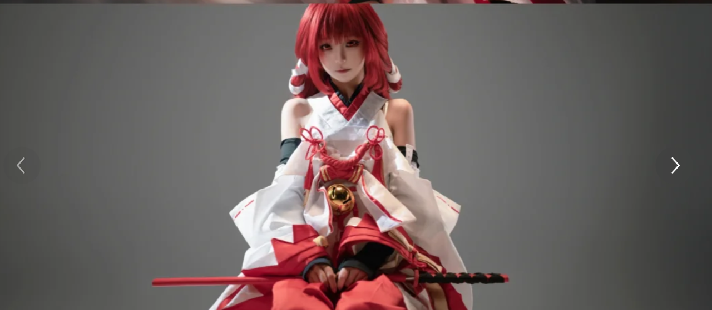
跪坐横刀
| 🦵 坐姿 | 正座（日式跪坐），双膝并拢，脚背贴地，臀部轻坐脚跟 |
| 🤲 双手 | 双手在腿前相叠，握住刀鞘中段，刀自然横斜放于双膝前方 |
| ⚔️ 刀 | 刀尖朝右斜下，刀柄朝左斜上（约20°斜线），不要水平 |
| 💪 肩膀 | 肩膀微微下沉放松，不要耸不要僵 |
| 🎎 身体 | 背挺直但不绷紧，微微前倾约5° |
| 👀 眼神 | 平视或略微抬眼直视镜头 |
| 👄 嘴 | 嘴唇自然闭合 |
| 💇 头发 | 两侧头发自然垂落肩前 |
- 刀是“斜”的 — 横放平淡，斜放才有张力
- 眼神“冷中带柔” — 不是凶不是甜，是“我什么都知道但我不说”
- 肩膀要“松” — 紧了变武士，松了才是少女
✅ 最佳匹配
09 日式和风 樱花+榻榻米
🔄 替代方案
05 禅意日式 更空灵简约
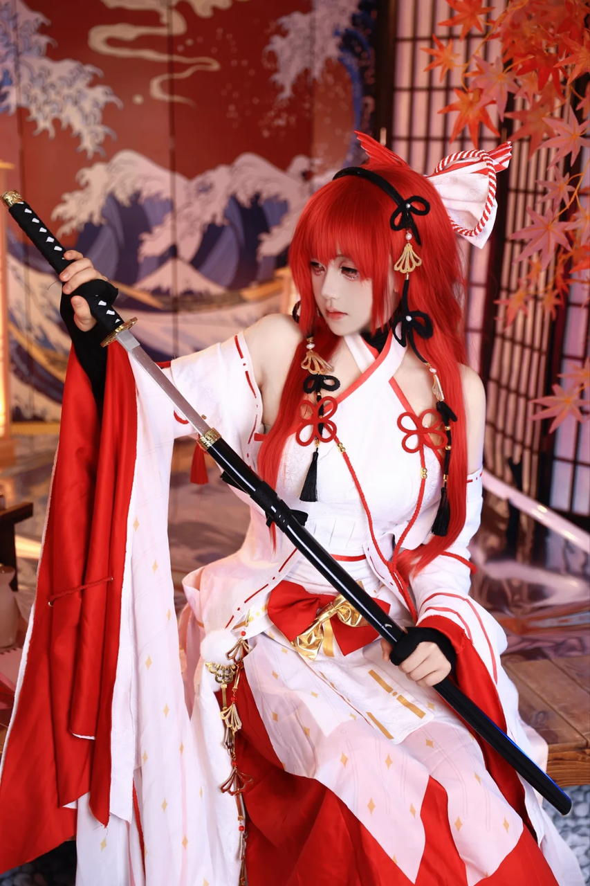
拔刀·凌
| 🦵 坐姿 | 侧坐，左腿盘坐、右膝微立，呈3/4侧面对镜头 |
| 🤚 右手 | 握刀柄，向右上方斜举拔出，刀刃出鞘约1/3 |
| 🤲 左手 | 握刀鞘中下段，鞘身斜穿身前 |
| ⚔️ 刀 | 刀身+鞘呈对角线，约30-40°斜线 |
| 💪 肩膀 | 右肩微抬，左肩自然下沉，形成高低肩 |
| 👀 眼神 | 斜向左下方凝视，不看镜头 |
| 👄 嘴 | 嘴唇微抿，不笑 |
| 👘 袖口 | 大袖自然下垂飘开 |
- 对角线构图 — 刀+鞘从右上到左下穿过画面
- “拔到一半”才有劲 — 半出鞘才有凝固动态感
- 眼神不看镜头 — 看左下方，飒感拉满
✅ 最佳匹配
09 日式和风 经典武士少女
🔄 替代方案
18 暗黑哥特 暗色反衬
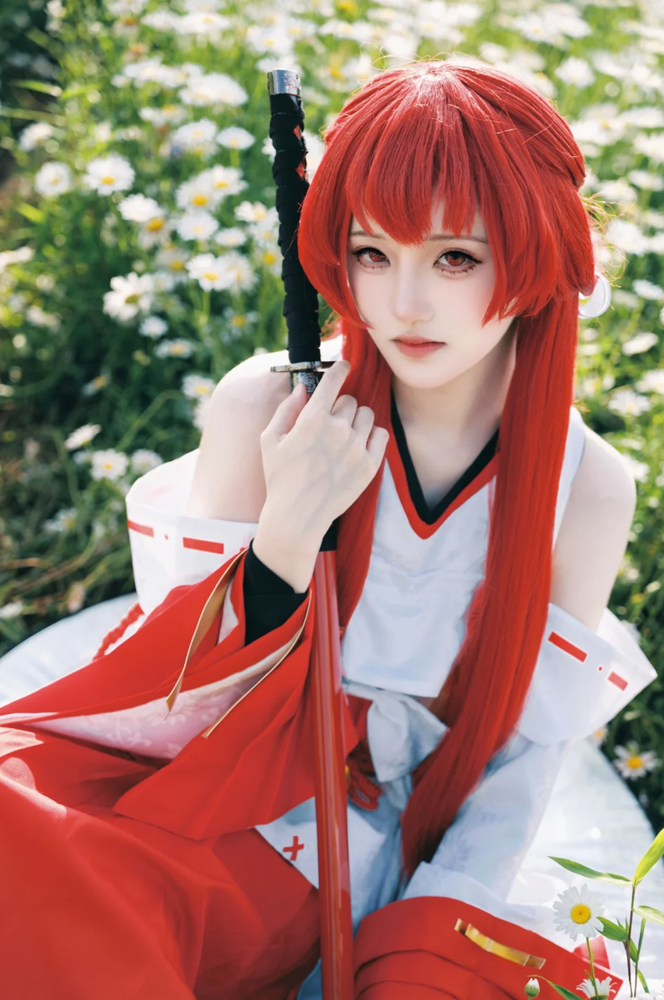
花隐·守
| 🦵 坐姿 | 蹲坐，整个人“缩”在花丛里 |
| ⚔️ 刀 | 刀鞘竖直立在身前，刀柄朝上、鞘尾触地 |
| 🤚 右手 | 轻握刀鞘上段——不是攥紧，是“搭着” |
| 👤 头部 | 微微右歪约10° |
| 👀 眼神 | 直视镜头，清澈 |
| 👄 嘴 | 嘴唇微微张开——无辜感 |
| 💇 头发 | 红发自然垂落身前 |
| 👘 袖口 | 红色大袖铺开在腿两侧和地上 |
- 刀是“靠着”不是“握着” — 松松搭上去
- “缩”在花里 — 让花丛齐肩或高于肩
- 微张嘴+歪头 — 组合=无辜杀手
✅ 最佳匹配
户外花海 雏菊/野花丛
🔄 替代方案
09 日式和风 樱花枝垂到肩两侧
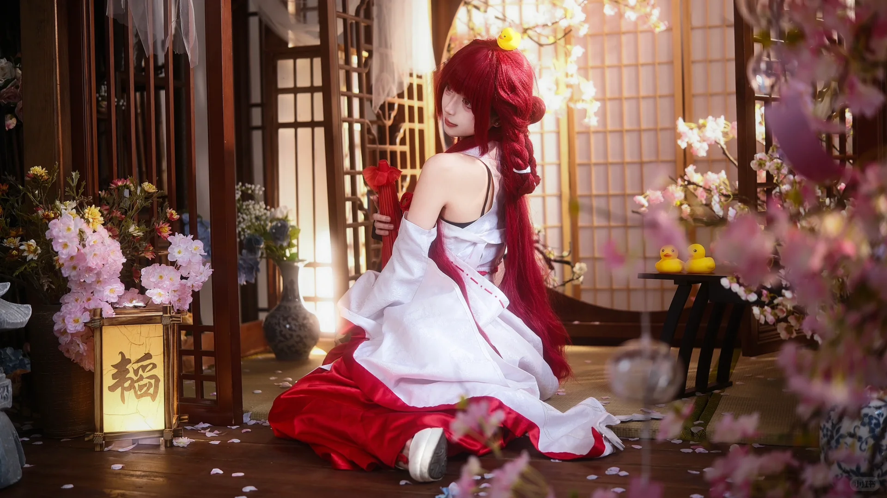
回眸·恋
| 🦵 坐姿 | 侧坐地面，裙摆铺散在地面 |
| 🎎 身体 | 背对镜头约120°，上身扭转回头——脊椎呈S型曲线 |
| 👀 眼神 | 微微垂眼，不舍与眷恋 |
| 👄 嘴 | 嘴唇自然微启——欲言又止 |
| 💇 头发 | 红发从肩膀自然垂落，露出后颈线条 |
| 🌸 氛围 | 地面散落樱花瓣，身旁小黄鸭和灯笼 |
- 背影是主体，脸是彩蛋 — 回眸的脸是情感锚点
- 脊椎S型很关键 — 腰→肩→颈的螺旋扭转
- “欲言又止”的嘴 — 微启状态最有故事感
✅ 最佳匹配
09 日式和风 侧逆光从圆窗照入
🔄 替代方案
05 禅意日式 更素净
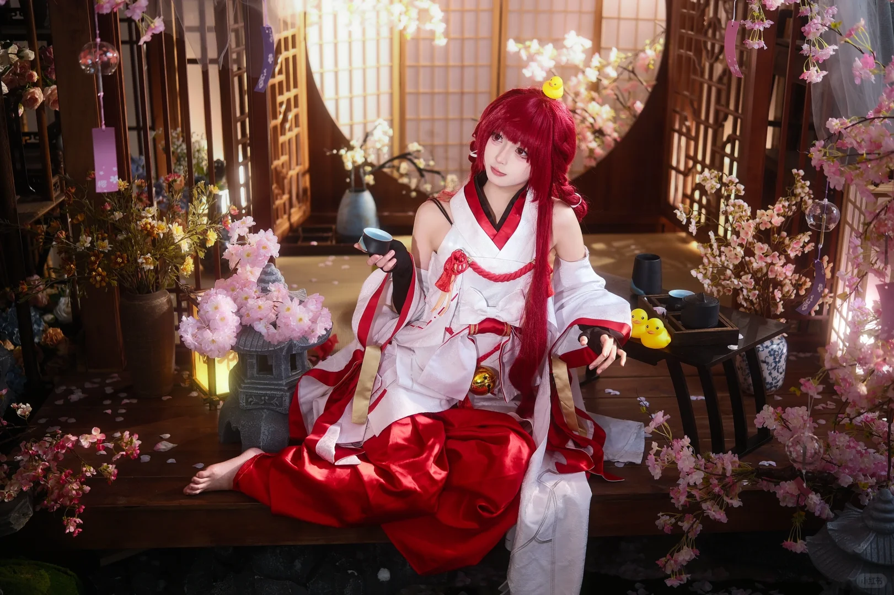
廊下·憩
| 🦵 坐姿 | 坐在廊沿/台阶上，双腿自然下垂 |
| 🤚 右手 | 持一只日式茶杯 |
| 🤲 左手 | 手指轻触旁边矮桌上的小黄鸭 |
| 👀 眼神 | 微笑看镜头，放松的月牙眼 |
| 👣 脚 | 赤脚，脚趾自然放松 |
| 🌸 氛围 | 樱花+灯笼+小黄鸭，暖色调 |
- 双手各有道具 — 一杯一鸭让画面信息量丰富
- 赤脚是灵魂 — 穿鞋变正式，赤脚才有松弛感
- 笑要自然 — 不是摆拍笑，是真笑
✅ 最佳匹配
09 日式和风 走廊/台阶/门槛
🔄 替代方案
05 禅意日式 窗边替代
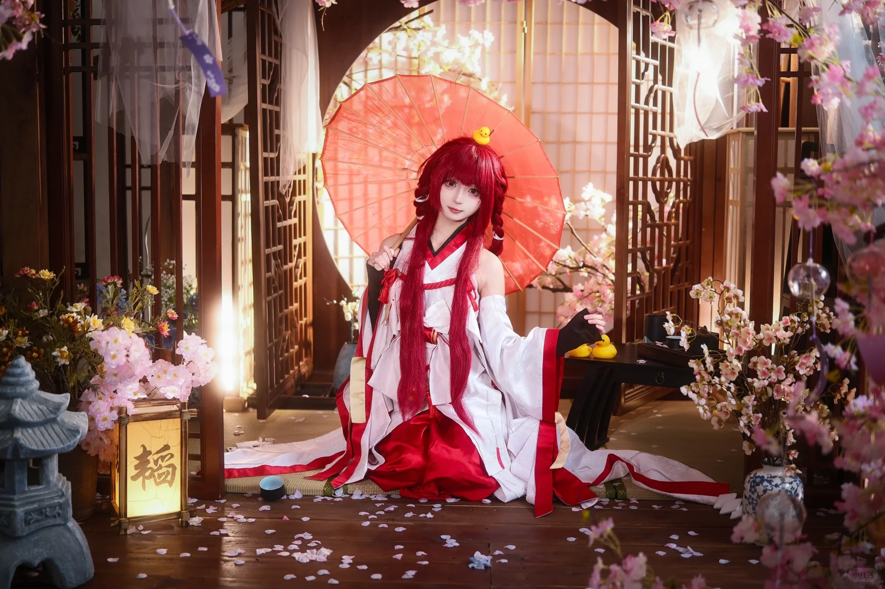
红伞·坐
| 🦵 坐姿 | 侧坐地面，裙摆自然铺开 |
| 🤚 右手 | 肩后撑开红色和伞 |
| 🤲 左手 | 自然搭在膝上或轻触小黄鸭 |
| 👀 眼神 | 直视镜头微笑 |
| 🌸 氛围 | 地面大量樱花花瓣，灯笼暖光，伞面透光 |
- 伞是构图的“圆” — 红色圆形伞面填充上半画面
- 伞面透光 — 让光穿过伞面照到脸上
- 花瓣要铺够 — 地面花瓣越多氛围越强
✅ 最佳匹配
09 日式和风 完美匹配
🔄 替代方案
自带红伞 淘宝搜“和风油纸伞”30-60元

托腮·盼
| 🎎 身体 | 上半身正对镜头，微微前倾 |
| 🤚 右手 | 手指轻触脸颊/托腮 |
| 👤 头部 | 微微右歪，配合托腮 |
| 👀 眼神 | 直视镜头，温柔带笑意 |
| 👄 嘴 | 嘴角轻轻上扬 |
| 🌸 背景 | 圆窗+樱花枝+小黄鸭，逆光勾勒发丝金边 |
- 圆窗逆光=天然光环 — 人物自带光晕
- 托腮手指要“松” — 指尖轻轻碰到脸颊
- 半身构图 — 突出表情和手部细节
✅ 最佳匹配
09 日式和风 有圆窗位置
🔄 替代方案
任何有窗光的场景
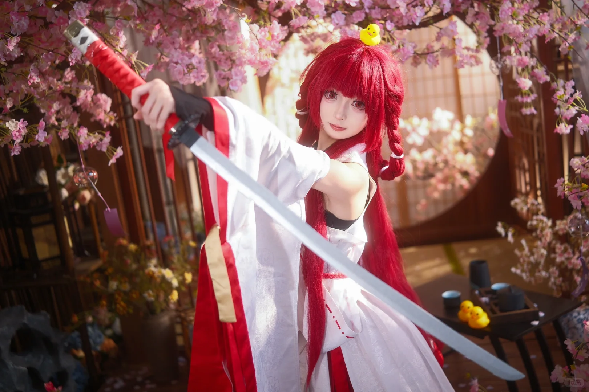
挥刃·斩
| 🎎 身体 | 站立或半蹲，身体微侧转，重心前移 |
| 🤚 右手 | 单手持刀水平伸出，刀刃完全出鞘 |
| 👀 眼神 | 看向刀尖方向，锐利专注 |
| 👄 嘴 | 嘴角微扬——战斗中的自信微笑 |
| 💇 头发 | 长发被甩起向后飘 |
| 👘 袖口 | 大袖随动作完全张开飘起 |
- 抓拍!抓拍!抓拍! — 连拍模式，在挥刀+头发飘起瞬间按快门
- 刀尖指向画面外 — 暗示斩向敌人
- 前景可以有花瓣 — 抛撒花瓣配合挥刀
✅ 最佳匹配
09 日式和风 空间足够
🔄 替代方案
户外 更开阔
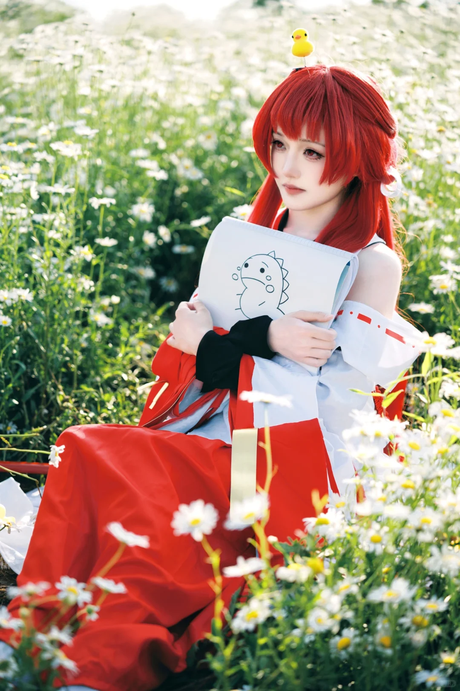
画板·念
| 🦵 坐姿 | 盘坐在花丛中 |
| 🤲 双手 | 双手环抱画板贴在胸前 |
| 👀 眼神 | 直视镜头，清澈带一丝忧愁 |
| 👄 嘴 | 嘴唇微微嘟起 |
| 🌸 氛围 | 小黄鸭在头顶，雏菊环绕 |
- 画板是叙事道具 — 小怪兽涂鸦是龙族经典元素
- 抱画板要像抱宝贝 — 珍惜地贴在胸口
- 大光圈虚化花海 — 花变柔和色块
✅ 最佳匹配
户外花海 雏菊/野花草地
🔄 替代方案
09 日式和风 铺花瓣+放画板
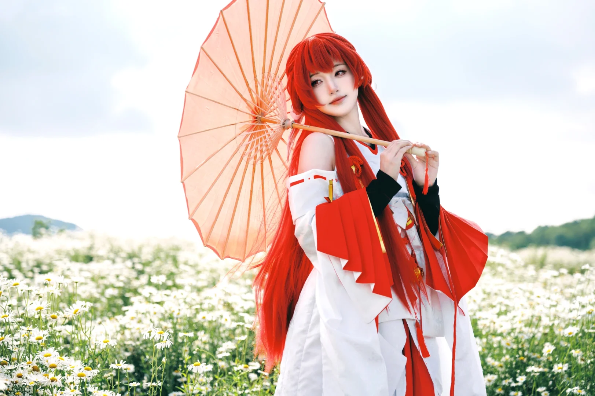
花伞·立
| 🎎 身体 | 站立，身体微侧转 |
| 🤚 右手 | 肩上撑开红色和伞 |
| 👤 头部 | 微微歪头面带微笑 |
| 💇 头发 | 长发自然垂落，被风轻轻吹动 |
- 仰拍显气场 — 低机位仰拍，天空+花海做背景
- 红伞vs蓝天 — 色彩对比超抓眼
- 风是最好的助手 — 等有风的瞬间按快门
✅ 最佳匹配
户外花海/草地
🔄 替代方案
17 莫奈花园 室内替代
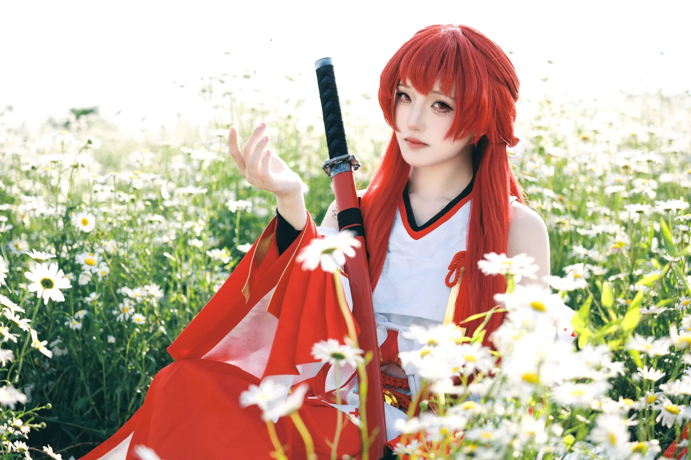
花中·探
| 🎎 身体 | 半身没入花丛，只露上半身 |
| 🤚 右手 | 手指向上轻轻张开，像在触碰空气 |
| 👀 眼神 | 看向手指方向，空灵 |
| 👄 嘴 | 嘴唇微启，好奇与惊叹 |
- 手的姿态是焦点 — 像芭蕾舞者的手
- 花海要“淹没”人 — 花丛越高感觉越强
- 逆光出仙气 — 发丝和花瓣都发光
✅ 最佳匹配
户外花海 花丛越高越好
🔄 替代方案
09 日式和风 利用垂落樱花枝
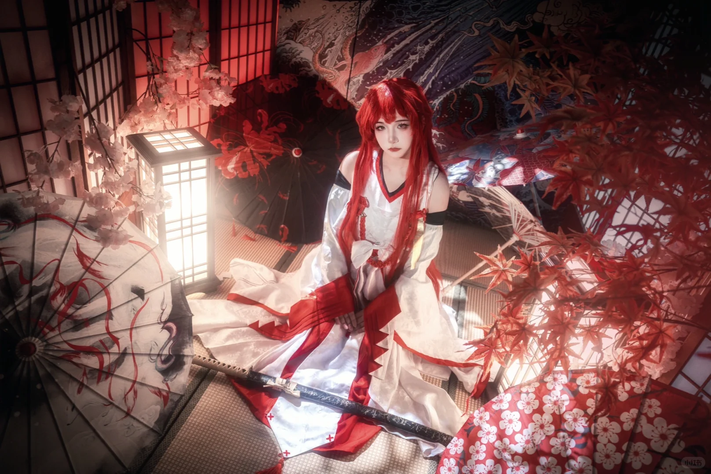
伞阵·暗
| 🦵 坐姿 | 侧坐地面，裙摆铺开 |
| 🎎 身体 | 微微前倾，面向镜头 |
| ⚔️ 刀 | 刀横放在身前地面 |
| 👀 眼神 | 直视镜头，冷峻带悲凉 |
| 🌸 氛围 | 多把和伞散落+枫叶+灯笼暖光——暗调高对比 |
- 暗调控制环境光 — 只留灯笼和一点侧光
- 和伞是构图元素 — 散落伞面填充画面
- 枫叶=龙族火焰隐喻
✅ 最佳匹配
18 暗黑哥特 暗色系首选
🔄 替代方案
09 日式和风 关灯+自带灯笼
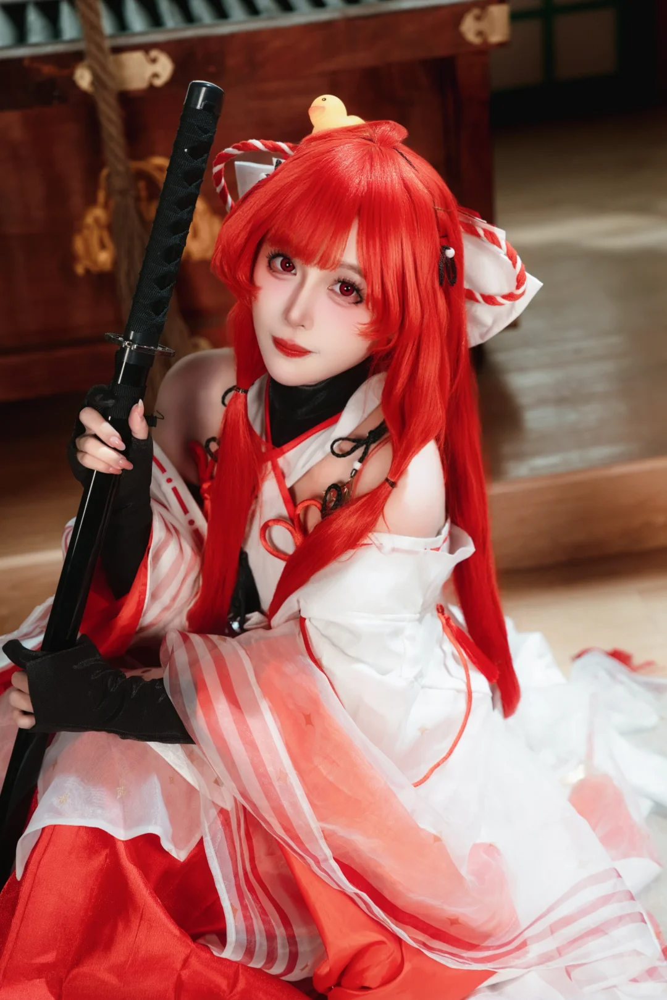
抱刀·萌
| 🦵 坐姿 | 随意坐在木地板上 |
| 🤲 双手 | 双手抱着入鞘的刀靠在肩上/胸前 |
| 👤 头部 | 歪头靠向刀的方向 |
| 👀 眼神 | 直视镜头，大眼睛 |
| 👄 嘴 | 微微嘟嘴或微笑 |
- 抱刀像抱玩偶 — 是“我的宝贝”
- 小黄鸭要出镜 — 别被刀挡住
- 和“拔刀·凌”形成反差
✅ 最佳匹配
09 日式和风 榻榻米/木地板
🔄 替代方案
户外神社
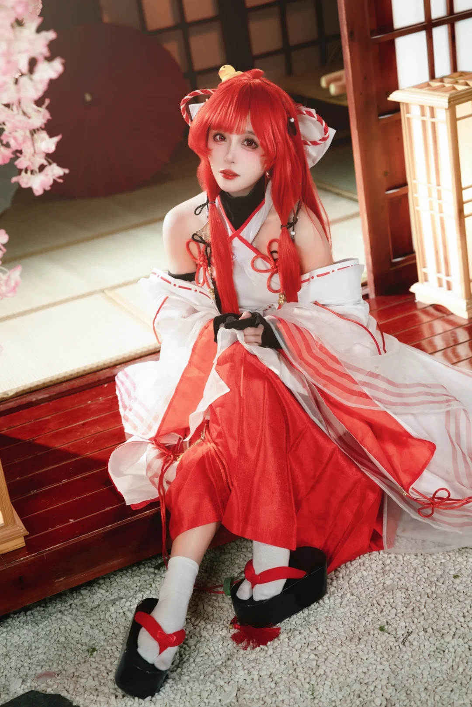
廊边·坐
| 🦵 坐姿 | 坐在走廊台阶/地上，一脚悬空 |
| 🎎 身体 | 身体微前倾，自然放松 |
| 👀 眼神 | 微微侧望或远方 |
| 👣 脚 | 白袜+红色木屐 |
| 🌸 氛围 | 樱花+灯笼+红伞做背景 |
- “等待”比“行动”更有故事
- 木屐和白袜的细节 — 拍一张脚部特写
- 走廊纵深感 — 利用走廊长度
✅ 最佳匹配
户外神社走廊
🔄 替代方案
09 日式和风 门槛/走廊替代
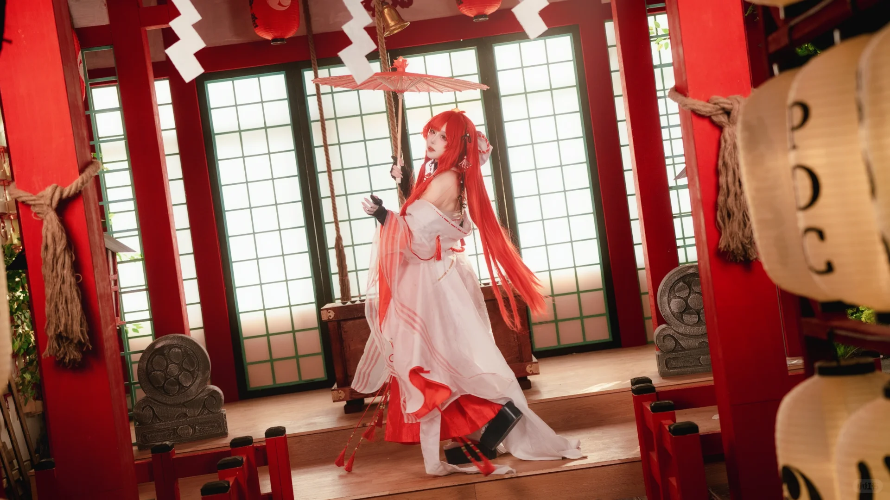
神社·伞行
| 🎎 身体 | 站立微侧转，像正在走动中回头 |
| 🤚 右手 | 肩上撑红色和伞 |
| 👤 头部 | 回头看镜头 |
| 👀 眼神 | 淡然中带神性距离感 |
| 🌸 氛围 | 红色殿柱+注连绳+灯笼+障子门 |
- 红色殿柱做“画框” — 天然框架构图
- “行走中回头”的动感 — 要有迈步感
- 神社元素越多越好
✅ 最佳匹配
户外神社 有红色殿堂
🔄 替代方案
09 日式和风 木格栅+红布
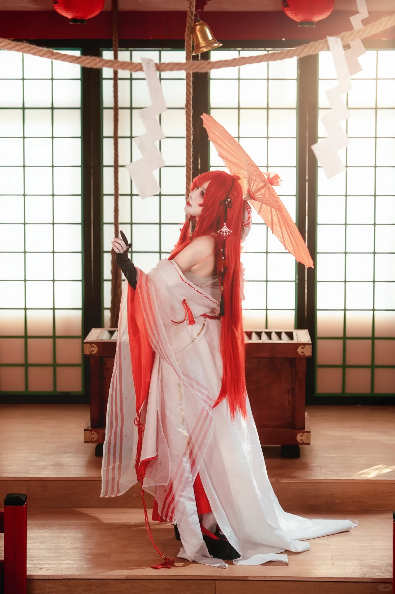
神社·伞立
| 🎎 身体 | 侧身站立 |
| 🤚 右手 | 上举触碰头顶绳索/风铃 |
| 🤲 左手 | 背后撑伞 |
| 👀 眼神 | 抬头看手指方向或闭眼 |
- 侧身轮廓线 — 展现和服层次感
- 手指“点到即止”
- 逆光剪影 — 障子门透光做背景
✅ 最佳匹配
户外神社
🔄 替代方案
09 日式和风 吊绳+风铃道具
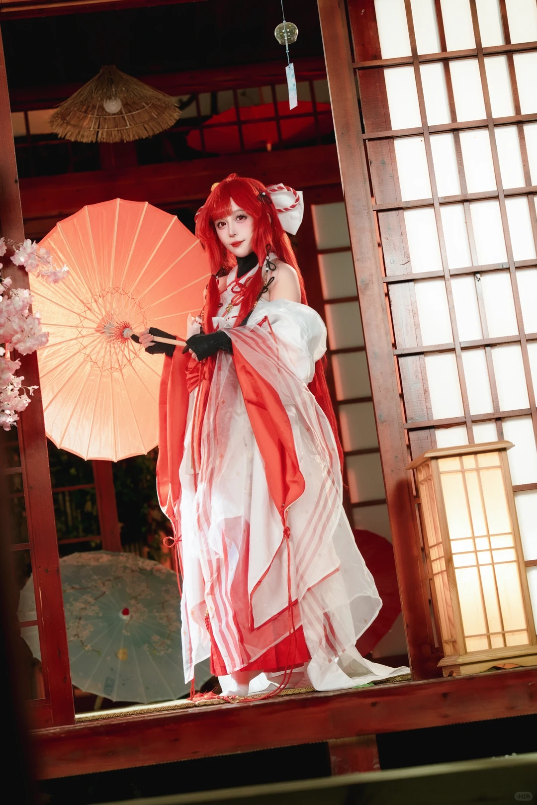
夜廊·伞立
| 🎎 身体 | 正面站立，微微侧身 |
| 👀 眼神 | 直视镜头，微微挑眉 |
| 👄 嘴 | 嘴角上扬微笑——自信的笑 |
| 🌸 氛围 | 夜色+暖色灯笼+樱花+和伞 |
- 暖色灯光=氛围神器
- 夜景要补光 — LED暖光从侧面打
- “皇女气质” — 拍出家主的气场
✅ 最佳匹配
户外神社夜景
🔄 替代方案
09 日式和风 关灯+灯笼布光
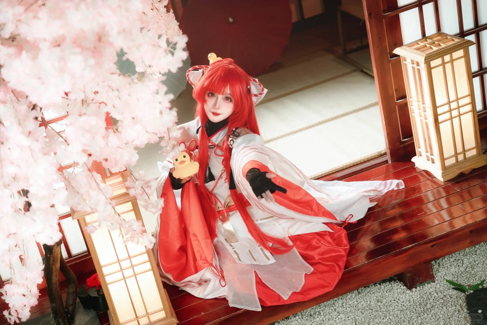
樱灯·鸭
| 🦵 坐姿 | 坐在廊沿 |
| 🤚 右手 | 手持一只小黄鸭举到面前 |
| 👀 眼神 | 看着小黄鸭或看镜头微笑 |
| 🌸 氛围 | 夜色樱花+灯笼暖光+红伞 |
- 小黄鸭和人物的互动 — 像在和鸭子说话
- 灯笼暖光 — 夜景的灵魂
- 日常绘梨衣 — 没有刀没有宿命
✅ 最佳匹配
09 日式和风 + 灯笼道具
🔄 替代方案
任何暗处 + 灯笼
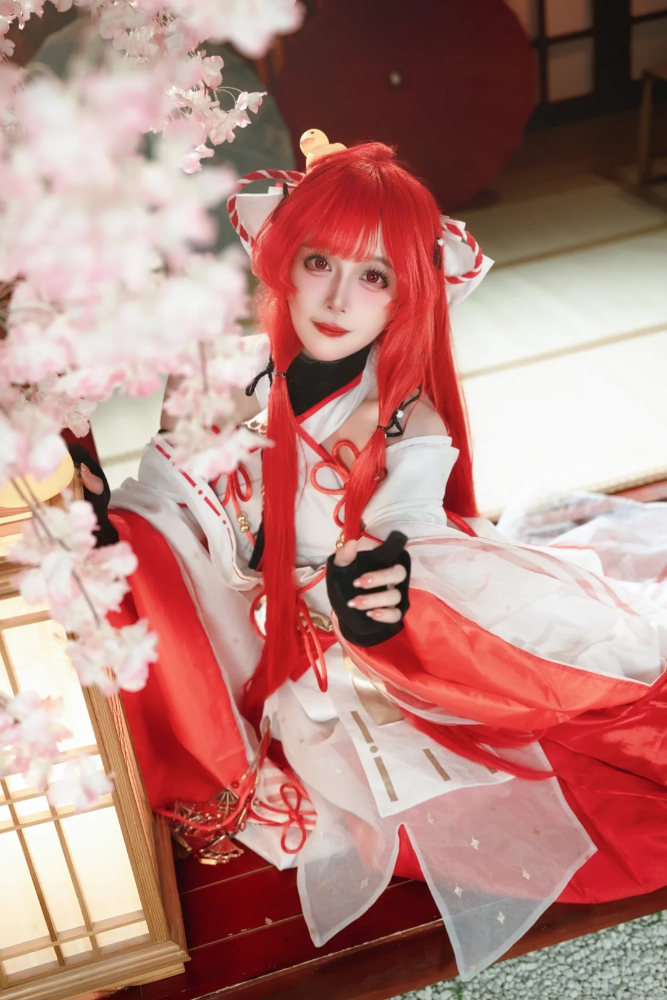
樱下·握拳
| 🎎 身体 | 坐姿微前倾 |
| 🤚 右手 | 手指微微握拳放在胸前 |
| 👀 眼神 | 直视镜头，清澈中带坚定 |
| 👄 嘴 | 嘴角微微上扬 |
- 握拳是情绪转折点 — 从天真到坚定
- 不要握太紧 — 少女的握拳是手指轻轻蜷起
- 配合樱花落肩 — 命运感+1000
✅ 最佳匹配
09 日式和风 樱花下
🔄 替代方案
户外樱花
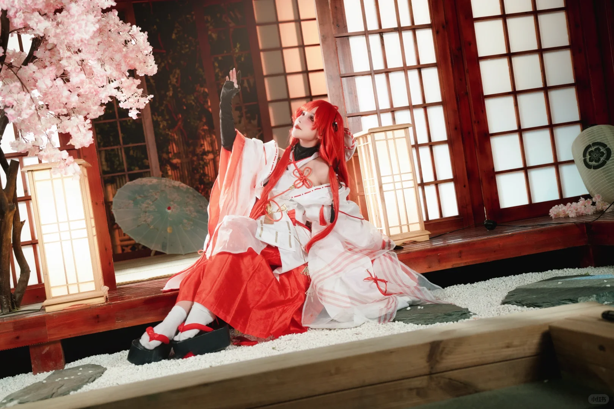
庭院·仰手
| 🦵 坐姿 | 侧坐在白石子地面 |
| 🤚 右手 | 向上举起，手指张开伸向天空 |
| 👤 头部 | 仰头看向手指方向 |
| 👀 眼神 | 看向天空，渴望和自由 |
| 🌸 氛围 | 枯山水石子+灯笼+和伞+樱花 |
- “变成鸟”经典台词 — 直接对应小说名场面
- 手要伸到画面最高处
- 留大量天空/上方空间 — 人在下方1/3
✅ 最佳匹配
户外神社庭院
🔄 替代方案
09 日式和风 门口石子地
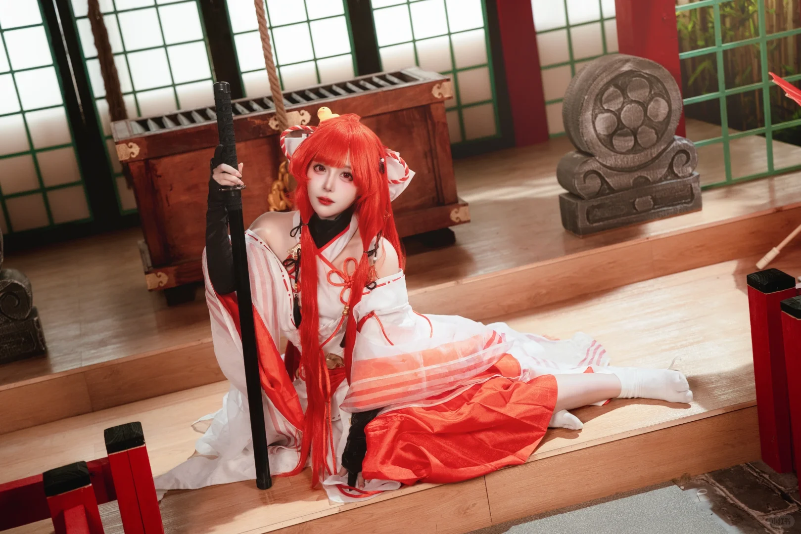
殿前·竖刀
| 🦵 坐姿 | 侧坐在木地板，一腿伸直 |
| 🤚 右手 | 手持刀竖直立在身侧 |
| 👀 眼神 | 直视镜头，平静带疲惫 |
| 🌸 氛围 | 神社殿内古朴道具 |
- 伸直的腿=松弛感 — 战斗结束后的疲惫
- 刀竖在身侧像伙伴
- 空间感 — 人偏一侧，另一侧留空
✅ 最佳匹配
户外神社殿内
🔄 替代方案
09 日式和风
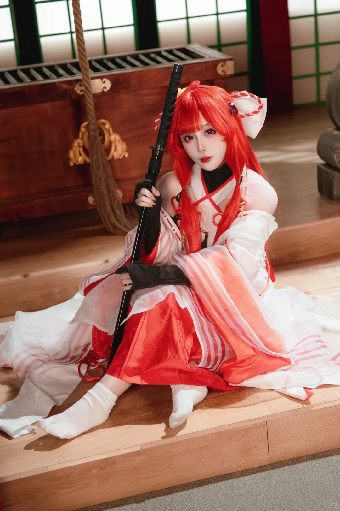
殿前·抱刀
| 🦵 坐姿 | 盘坐在木地板 |
| 🤲 双手 | 双手抱刀竖在身前 |
| 👀 眼神 | 直视镜头，微微瞪眼 |
| 👄 嘴 | 嘴唇微嘟起——警惕但可爱 |
- “像猫一样乖巧” — 猫的警觉+软萌
- 抱刀力度 — 比12号稍紧，像在保护什么
- 略高俯拍显可爱
✅ 最佳匹配
户外神社殿内
🔄 替代方案
09 日式和风
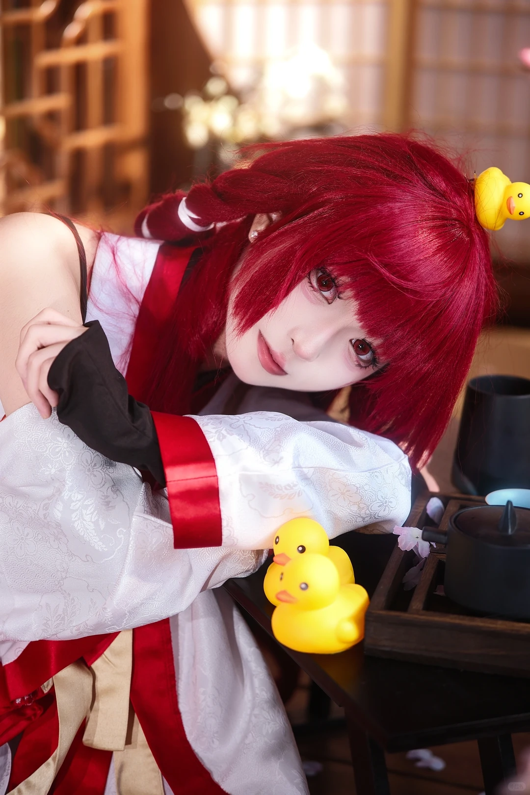
趴桌·鸭
| 🎎 身体 | 趴在矮桌上，手臂交叠枕着头 |
| 👤 头部 | 侧脸贴在手臂上，看桌上小黄鸭 |
| 👀 眼神 | 看向小黄鸭，温柔放空 |
| 👄 嘴 | 嘴角轻扬微笑 |
| 🦆 道具 | 桌上2-3只小黄鸭+茶杯 |
- 趴下来才是日常
- 脸贴手臂45° — 露一只眼看鸭子
- 大光圈虚化前景 — 鸭子在前景虚化
✅ 最佳匹配
09 日式和风 矮桌位置
🔄 替代方案
任何有矮桌的场景
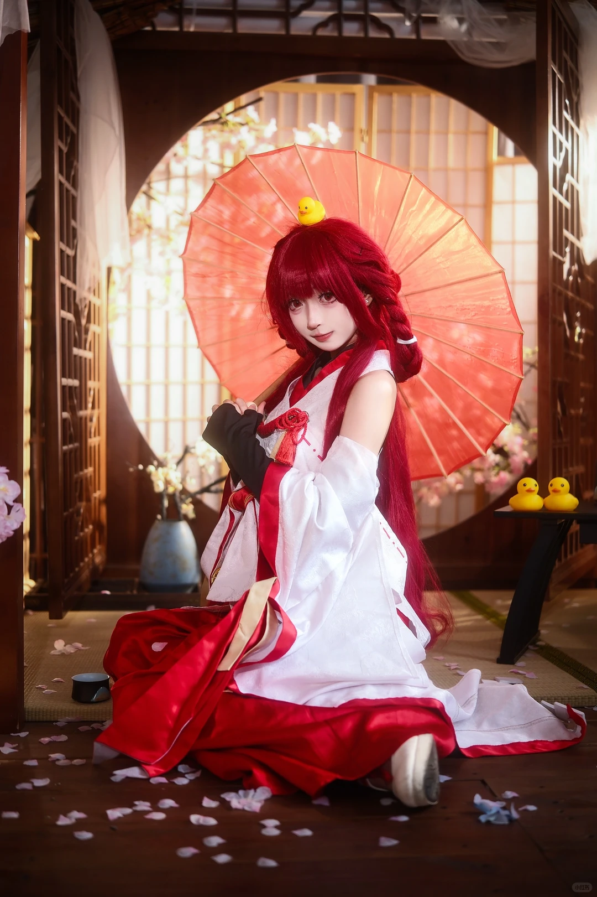
跪伞·微笑
| 🦵 坐姿 | 正跪坐，裙摆铺开 |
| 🤚 右手 | 肩后撑红色和伞 |
| 🤲 左手 | 自然放在膝前 |
| 👀 眼神 | 直视镜头温柔微笑 |
| 🌸 氛围 | 圆窗逆光+落樱+小黄鸭 |
- 这是“封面图”级别 — 最经典最安全的构图
- 圆窗=天然光环
- 花瓣不嫌多
✅ 最佳匹配
09 日式和风 圆窗位置
🔄 替代方案
任何有拱形窗的场景
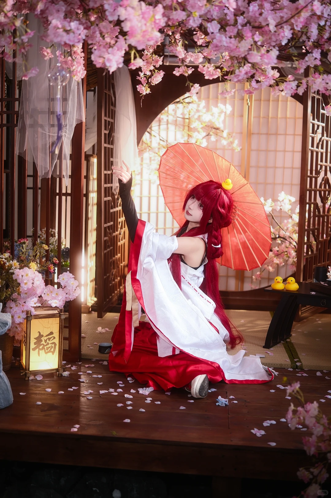
伞舞·举手
| 🦵 坐姿 | 跪坐，身体微后仰 |
| 🤚 右手 | 高举过头，手指张开接花瓣 |
| 🤲 左手 | 身后撑伞 |
| 👀 眼神 | 仰头看向举起的手 |
| 🌸 氛围 | 大量樱花从头顶飘落 |
- 花瓣从头顶撒下 — 需要助手撒花瓣+连拍
- 手臂线条要美 — 像接住珍贵的东西
- 仰头+闭眼 — 最梦幻
✅ 最佳匹配
09 日式和风
🔄 替代方案
户外樱花树下
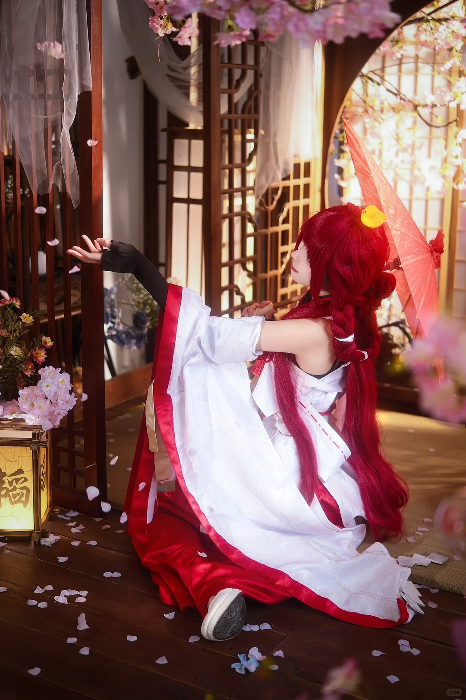
接瓣·侧身
| 🎎 身体 | 侧坐，朝向画面一侧 |
| 🤚 右手 | 向侧前方伸出，手掌朝上接花瓣 |
| 👤 头部 | 微低头看向手掌 |
| 🌸 氛围 | 大量花瓣飘落+灯笼+圆窗光 |
- 手掌朝上是关键 — “接住”而不是“抓住”
- 侧身让画面有方向性
- 低头看手掌 — 沉浸在自己的世界
✅ 最佳匹配
09 日式和风
🔄 替代方案
户外樱花
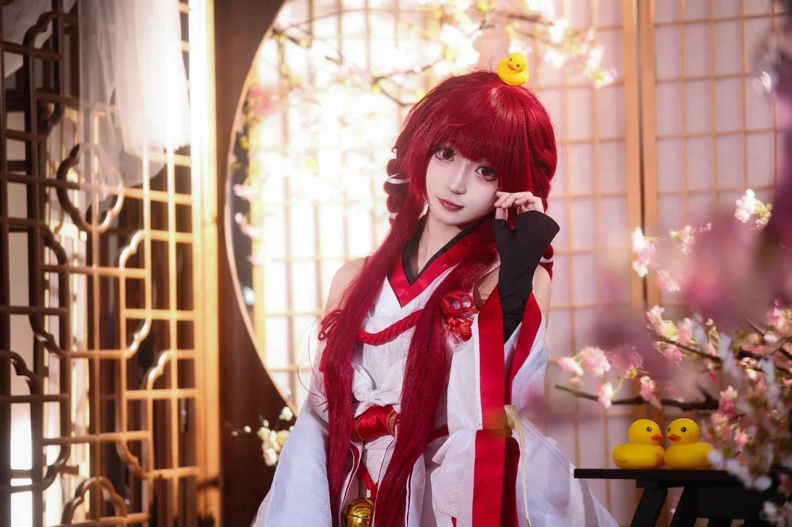
托腮·盼B
| 🤚 右手 | 手指轻触脸颊，配合歪头 |
| 👀 眼神 | 直视镜头，温柔微笑 |
| 🌸 背景 | 圆窗+樱花+小黄鸭 |
- 和06是“配对” — 后期选片二选一
- 表情更放松 — 比06笑得更自然
- 发辫搭在肩前 — 红色发辫垂在白衣上
✅ 最佳匹配
09 日式和风 圆窗位置
🔄 替代方案
同06
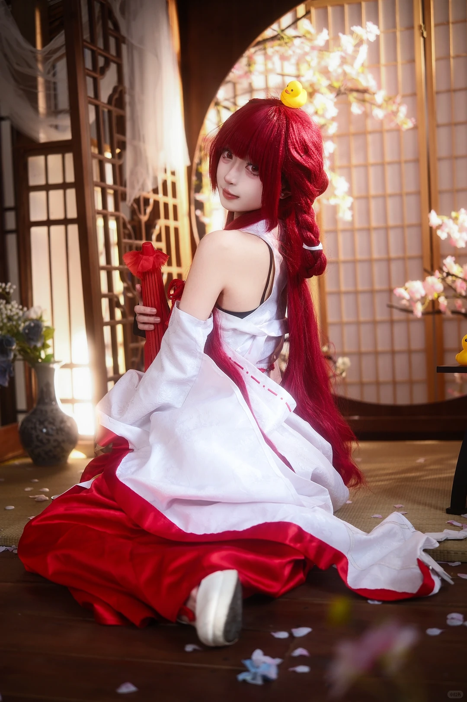
回眸·恋B
| 🎎 身体 | 背对镜头侧坐，回头望 |
| 🤚 右手 | 手持红色小扇子 |
| 👀 眼神 | 回头看镜头，温柔中带不舍 |
| 💇 头发 | 发辫垂落背后，露出后颈和肩膀 |
- 和03是“配对” — 后期可组系列
- 扇子增加手部细节
- 后颈线条 — 和服后领微拉露出后颈
✅ 最佳匹配
09 日式和风
🔄 替代方案
同03
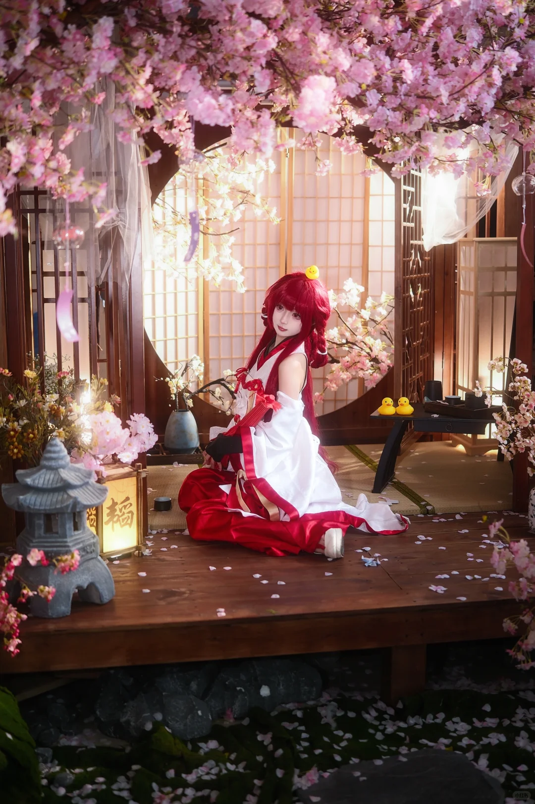
樱廊·全景
| 🦵 坐姿 | 侧坐在廊沿 |
| 🎎 构图 | 人物占画面1/3，其余给环境 |
| 🌸 氛围 | 石灯笼+樱花+圆窗光+小黄鸭——全景叙事 |
- 景大人小=电影感
- 用广角收全景 — 24-35mm
- 可以做封面/横幅
✅ 最佳匹配
09 日式和风 全景位置
🔄 替代方案
户外神社 全景
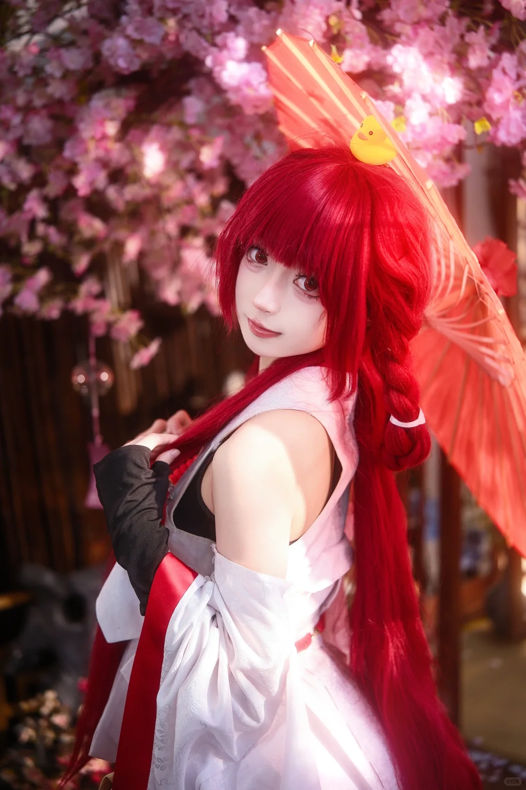
樱中·回眸
| 🎎 身体 | 背对镜头转身回头 |
| 🤚 右手 | 肩后撑伞 |
| 👀 眼神 | 回头微笑看镜头 |
| 🌸 氛围 | 夜樱+暖色补光 |
- 夜樱需要补光 — LED暖光从侧面打
- 浅景深虚化花瓣
- 表情比白天更放得开
✅ 最佳匹配
户外夜樱
🔄 替代方案
09 日式和风 关灯+补光
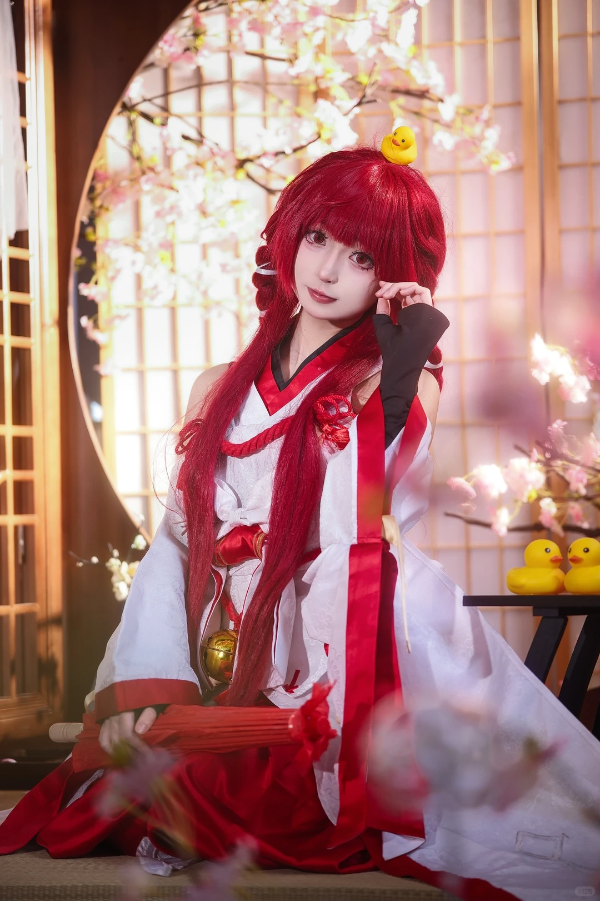
托腮·持扇
| 🤚 右手 | 托腮 |
| 🤲 左手 | 手持红色小折扇 |
| 👀 眼神 | 看镜头微笑 |
| 🦆 道具 | 旁边小黄鸭+茶杯 |
- 扇子增加手部细节
- 06/26/30是系列 — 圆窗托腮三连
- 最轻松的表情 — 三张中笑得最开
✅ 最佳匹配
09 日式和风 圆窗
🔄 替代方案
同06/26
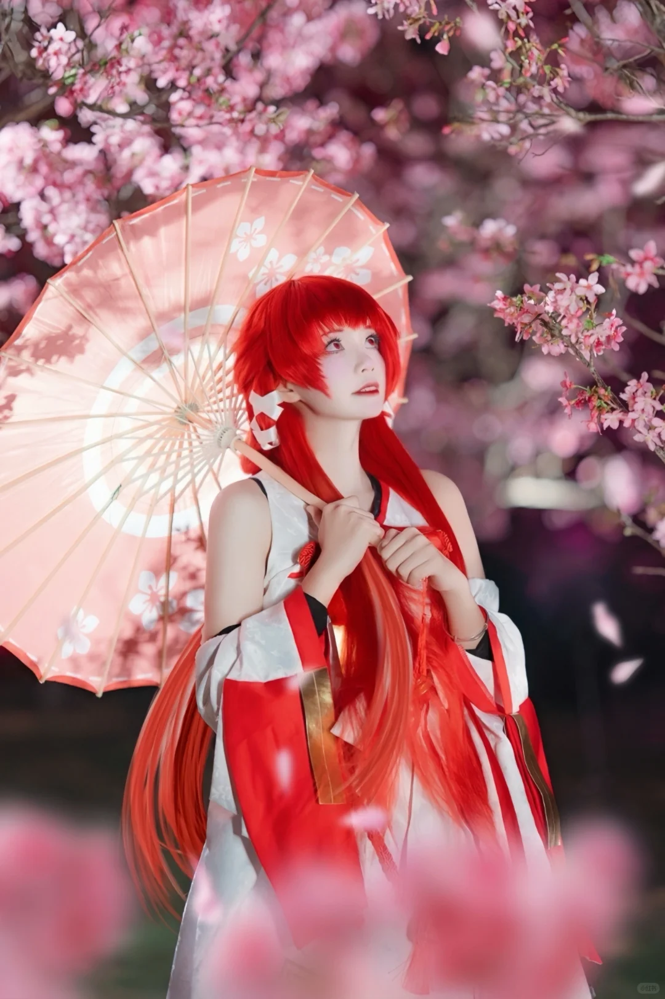
夜樱·仰望
| 🎎 身体 | 站立，微后仰 |
| 🤚 右手 | 肩上撑伞 |
| 👤 头部 | 仰头看向头顶樱花 |
| 👀 眼神 | 看向花枝，若有所思 |
- 仰头动作要慢
- 夜景闪光灯补光 — 侧面打可冻结花瓣
- 构图留上方空间给花
✅ 最佳匹配
户外夜樱
🔄 替代方案
09 日式和风 关灯+补光
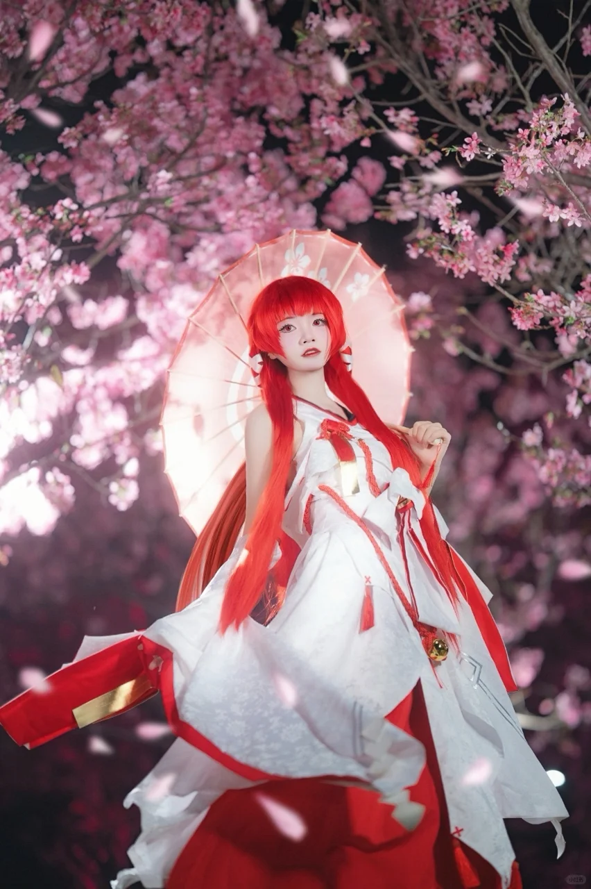
夜樱·伞立
| 🎎 身体 | 站立全身像，微侧 |
| 🤚 右手 | 撑伞，伞面在肩后打开 |
| 👀 眼神 | 仰头或远望 |
- 低机位拍出气势
- 伞和人物是唯一暖色
- 可以做手机壁纸
✅ 最佳匹配
户外夜樱
🔄 替代方案
无室内替代，需户外
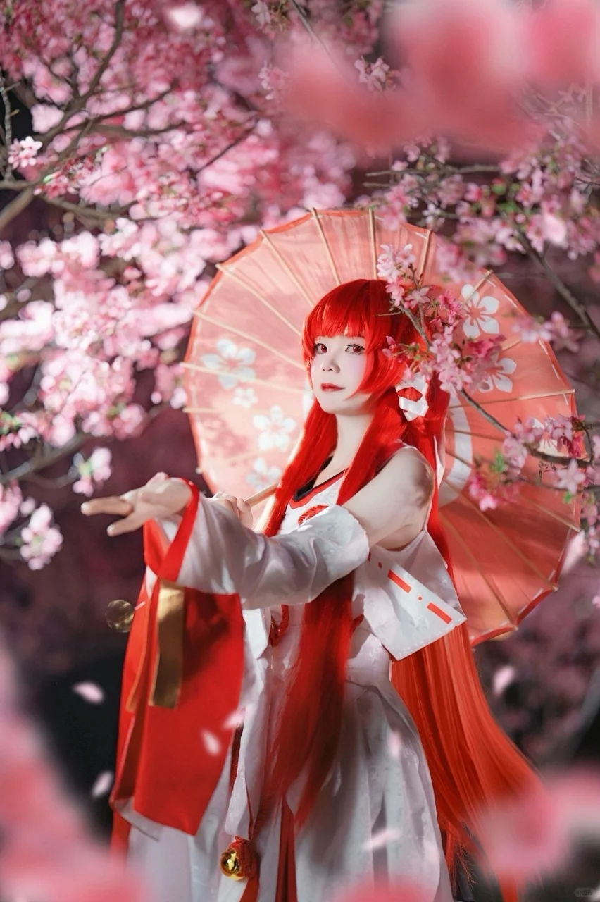
夜樱·接瓣
| 🤚 右手 | 撑伞 |
| 🤲 左手 | 伸手接飘落花瓣，手掌朝上 |
| 👀 眼神 | 看向手掌 |
| 👄 嘴 | 微微嘟嘴——专注 |
- 和25是日夜配对
- 需要助手撒花瓣+连拍
- LED暖光从下方打 — 像捧着一盏灯
✅ 最佳匹配
户外夜樱
🔄 替代方案
09 日式和风 关灯+撒花瓣
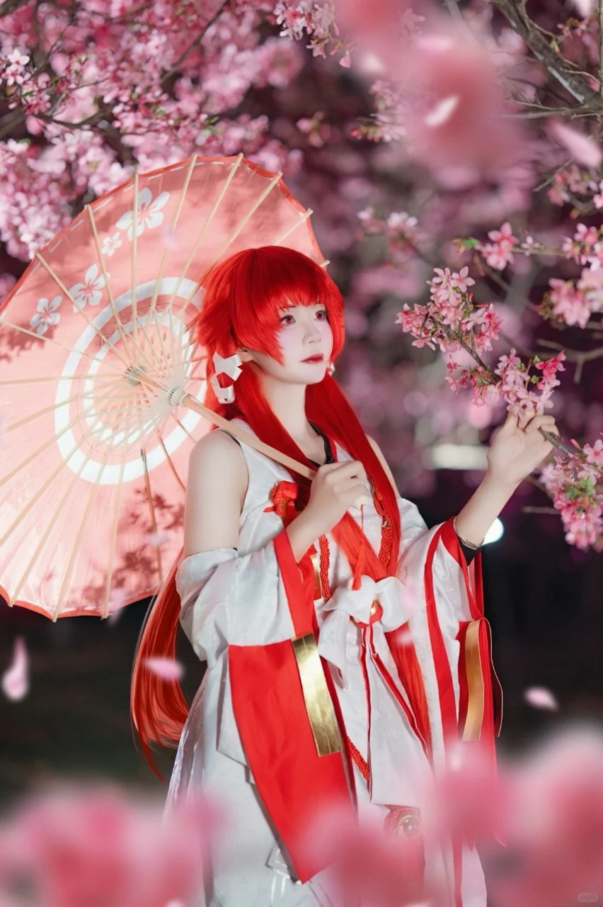
夜樱·伞下
| 🤚 右手 | 撑伞搭肩上 |
| 🤲 左手 | 轻拂身旁樱花枝 |
| 👀 眼神 | 看向花枝 |
| 🌸 前景 | 大量虚化花瓣做前景 |
- 前景虚化是灵魂
- 拂花枝要轻 — 指尖碰到即可
- 大光圈+长焦 — f/1.4-1.8 + 85mm
✅ 最佳匹配
户外夜樱
🔄 替代方案
无室内替代
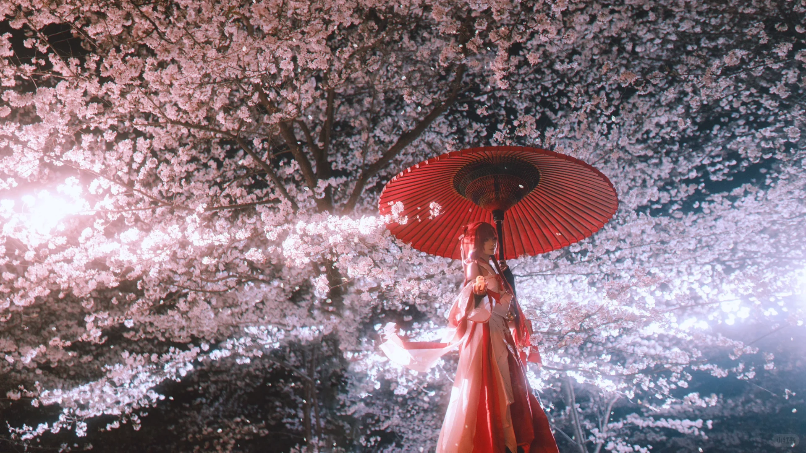
樱树·远景
| 🎎 构图 | 景大人极小，樱花树占画面80%+ |
| 🤚 道具 | 撑红伞站立——红伞是唯一标记 |
- 最不像人像的人像照
- 红伞必须存在 — 没有伞人就消失了
- 适合做封面/壁纸
✅ 最佳匹配
户外大樱花树 只能户外
🔄 替代方案
无替代
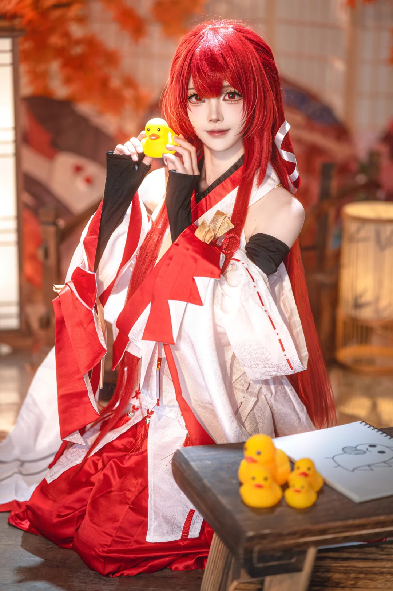
举鸭·笑
| 🤚 右手 | 举起一只小黄鸭到脸旁 |
| 👀 眼神 | 看镜头，开心大笑 |
| 🦆 道具 | 桌上一群小黄鸭+画板 |
- 笑得最开心的一张 — 要真笑
- 小黄鸭举到脸旁 — 像在介绍朋友
- 鸭群是背景故事
✅ 最佳匹配
09 日式和风 矮桌位置
🔄 替代方案
任何场景+小黄鸭
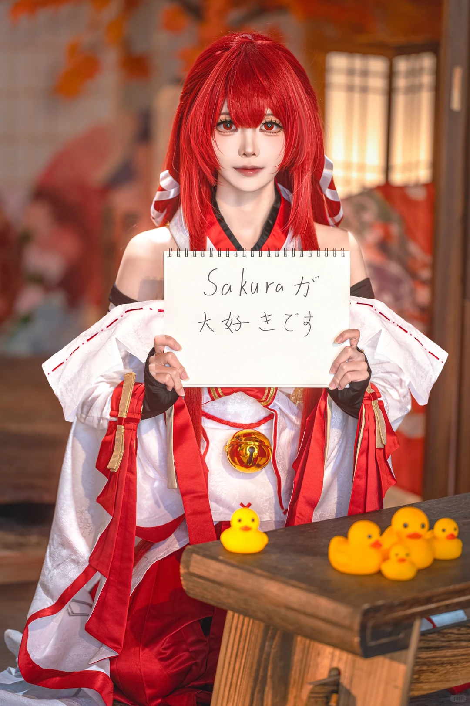
举牌·告白
| 🤲 双手 | 双手举画板到胸前 |
| 👀 眼神 | 从画板上方直视镜头 |
| 👄 嘴 | 嘴唇微启——害羞但认真 |
- 画板内容可自定义
- “从板后面探头看” — 半遮半露更有互动感
- 表情要认真but害羞
✅ 最佳匹配
09 日式和风
🔄 替代方案
任何场景
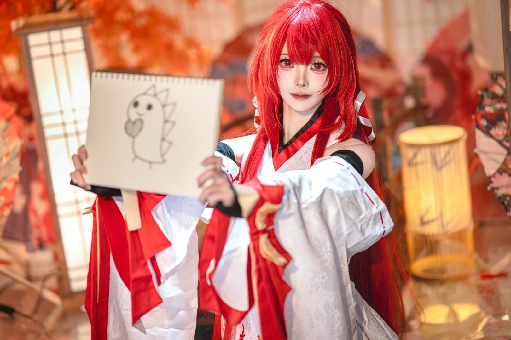
举画·笑
| 🤚 右手 | 单手举画板展示 |
| 🤲 左手 | 指向画板 |
| 👀 眼神 | 直视镜头，得意笑 |
- 动态感 — 像刚画完迫不及待展示
- 小怪兽画要提前准备
- 和08“画板·念”是对比组
✅ 最佳匹配
09 日式和风
🔄 替代方案
任何场景
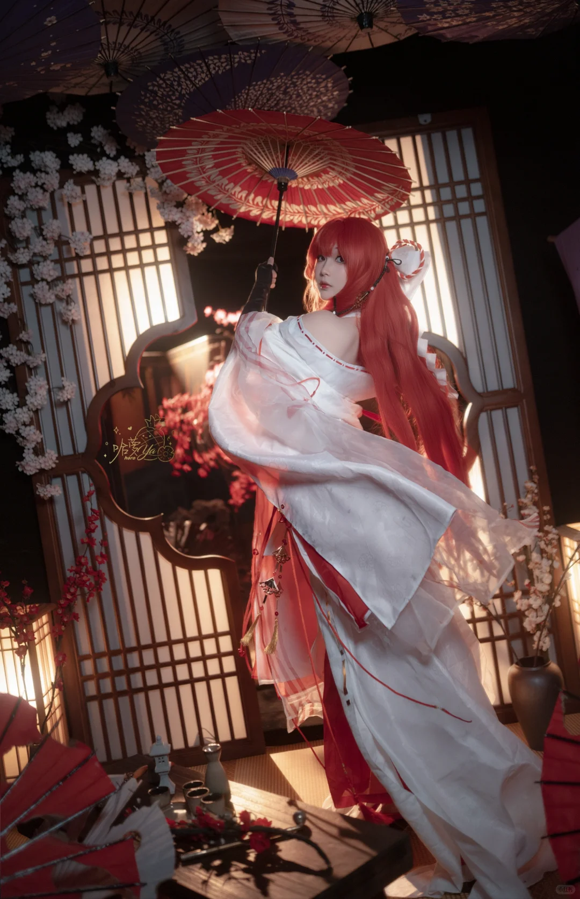
暗室·伞立
| 🎎 身体 | 站立，身体微侧转 |
| 🤚 右手 | 高举撑伞 |
| 👀 眼神 | 侧望远方，神情淡然 |
| 🌸 氛围 | 多把和伞散落+灯笼暖光+樱花——暗黑华丽风 |
- 这是压轴收尾 — 放在最后，情绪推到最高
- 暗处只留轮廓和亮点
- 和11“伞阵·暗”是配对 — 一坐一站
✅ 最佳匹配
18 暗黑哥特 或 09 日式和风 关灯
🔄 替代方案
任何可全黑空间+灯笼